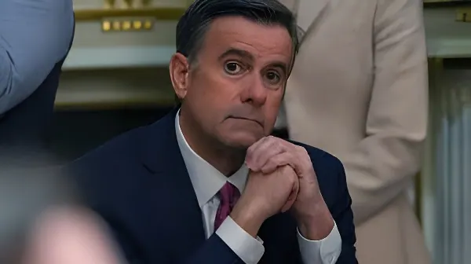

Le 14 mai 2026, le directeur de la CIA, John Ratcliffe, atterrit à La Havane à bord d'un vol de mission spéciale depuis la base Andrews. En soixante ans, l'Agence est passée du sabotage, des tentatives d'assassinat et de l'espionnage clandestin à une diplomatie de crise inédite. Retour sur une relation entre les deux rives du détroit de Floride — faite de trahisons, de coups tordus et, peut-être pour la première fois, d'un dialogue de nécessité.
La présence de la CIA à Cuba précède de loin la révolution. Dès la décennie 1950, l'Agence opère depuis une antenne locale intégrée à l'ambassade américaine à La Havane, ainsi qu'à Santiago depuis son consulat. Dans ces années Batista, la CIA et le FBI prêtent main-forte aux organes répressifs de la dictature, notamment le Bureau pour la Répression des Activités Communistes (BRAC), en participant à des interrogatoires et en apportant un appui matériel aux forces de l'ordre contre le mouvement révolutionnaire naissant.
Lorsque Fidel Castro prend le pouvoir le 1er janvier 1959, la CIA compte déjà une vingtaine d'officiers chargés de gérer un réseau de collaborateurs à travers l'île. La nationalisation des propriétés américaines et le rapprochement rapide avec Moscou déclenchent une réaction immédiate de Washington. Dès le 17 mars 1960, le président Eisenhower approuve un premier programme d'actions clandestines dont l'un des objectifs est, textuellement, « la création d'une organisation secrète d'intelligence et d'action sur le territoire cubain ».
Le 17 avril 1961, quelque 1 400 exilés cubains entraînés et équipés par la CIA débarquent dans la baie des Cochons avec l'objectif d'établir une tête de pont et de provoquer un soulèvement populaire. L'opération est précédée le 15 avril de bombardements aériens menés par des B-26 peints aux couleurs cubaines pour simuler une rébellion interne. L'échec est total en soixante-douze heures. Castro bénéficiait d'un renseignement suffisant pour déplacer son aviation avant les frappes, et les forces de débarquement sont rapidement encerclées.
Cet épisode reste à ce jour « la pire débâcle dans l'histoire des opérations clandestines américaines », selon les mots de l'historien Peter Kornbluh. Il vaut à la CIA une profonde remise en cause et humilie publiquement le président Kennedy, qui reconnaît sa responsabilité. Environ 1 200 prisonniers sont libérés après vingt mois de détention contre une rançon de 53 millions de dollars en médicaments et vivres.
Autorisée le 30 novembre 1961 par Kennedy, l'opération Mongoose — aussi baptisée « The Cuban Project » — constitue la réponse de l'administration au fiasco de la baie des Cochons. Son objectif affiché est le renversement du gouvernement cubain par des moyens clandestins. Elle est confiée au général Edward Lansdale, spécialiste de la contre-insurrection ayant opéré aux Philippines et au Vietnam. Le quartier général opérationnel, nom de code JM/WAVE, est installé sur le campus de l'université de Miami sous couverture d'une société d'électronique fictive.
Au pic de son activité en 1962, Mongoose mobilise environ 600 agents de la CIA et 3 000 agents contractuels cubains et américains. Les actions incluent le sabotage d'infrastructures économiques, l'armement de groupes opposants à l'intérieur de l'île, la destruction de récoltes, le minage de ports et la publication de photographies compromettantes contre Castro. La Commission Church révélera en 1975 que plusieurs plans d'assassinat furent sérieusement envisagés : cigares empoisonnés, combinaison de plongée contaminée, coquillages explosifs, ou encore une poudre destinée à faire tomber la barbe de Castro pour le ridiculiser.
« Ce soir du 14 septembre 1960, nous étions torse nu dans la chaleur de La Havane, à percer les murs d'un appartement du dix-huitième étage pour installer des micros — quand les autorités cubaines ont enfoncé la porte. »
— David Christ, officier CIA, arrêté à La Havane en 1960, cité par la CIA dans ses archives déclassifiéesLa rupture diplomatique de janvier 1961 ne met pas fin à la présence de la CIA à Cuba. L'Agence maintient des relais via des services alliés, puis reprend pied officieusement dès que l'occasion se présente. L'établissement de la Section des Intérêts américains à La Havane (SINA) le 1er septembre 1977 — équivalent d'une ambassade réduite — permet la réinstallation de services d'espionnage sous couverture diplomatique. Selon des publications officielles cubaines, entre 1977 et 1987, 38 officiers de l'Agence auraient été démasqués sur un total de 79 personnels diplomatiques affectés à la SINA. 113 autres officiers opérant sous couverture de fonctionnaires en transit furent également identifiés par la Direction du renseignement cubaine.
La Dirección General de Inteligencia (DGI) cubaine — formée en grande partie par le KGB soviétique au début des années 1960 — s'est révélée un adversaire redoutable. Elle parvient à infiltrer la communauté cubaine exilée aux États-Unis, à retourner des agents recrutés par la CIA et à pénétrer certaines structures de renseignement américaines. L'affaire Ana Belén Montes, analyste de la Defense Intelligence Agency condamnée en 2002 pour espionnage au profit de Cuba pendant seize ans, illustre la capacité offensive de La Havane dans cette guerre silencieuse.
Eisenhower approuve le premier programme clandestin contre Cuba. La CIA reçoit pour mission de créer une organisation d'action secrète sur l'île.
Débarquement de la baie des Cochons. Fiasco en 72 heures. ~1 200 prisonniers, libérés contre rançon. Kennedy limoge le directeur Allen Dulles.
Opération Mongoose : sabotages, plans d'assassinat, armement des opposants. Suspendue lors de la crise des missiles d'octobre 1962.
Ouverture de la SINA. La CIA reprend pied à La Havane sous couverture diplomatique. Jusqu'en 1987, 38 officiers seront identifiés par Cuba.
Premiers cas du « syndrome de La Havane » parmi des diplomates et agents américains. Symptômes neurologiques inexpliqués. Les soupçons visent l'intelligence militaire russe (GRU).
Visite historique : le directeur John Ratcliffe se rend à La Havane. Première fois qu'un patron de la CIA foule le sol cubain depuis la révolution. Il rencontre le MININT et le petit-fils de Raúl Castro.
Le 14 mai 2026, un avion de mission spéciale en provenance de la base conjointe Andrews se pose à l'aéroport José Martí de La Havane. À bord : John Ratcliffe, directeur de la CIA nommé par Trump, et une délégation américaine. C'est la deuxième fois qu'un avion gouvernemental américain atterrit dans la capitale cubaine depuis 2016 — la première visite avait eu lieu le 10 avril, à un niveau plus bas. La CIA publie elle-même des photos de la réunion sur X.
Ratcliffe rencontre Lázaro Álvarez Casas, ministre cubain de l'Intérieur, Ramón Romero Curbelo, chef du renseignement du MININT, et Raúl Guillermo Rodríguez Castro, petit-fils de Raúl Castro et ancien chef de la sécurité présidentielle de l'île. La réunion porte sur la coopération en matière de renseignement, la stabilité économique et les questions de sécurité. Le message de Trump, tel que formulé par la CIA : les États-Unis sont « prêts à s'engager sérieusement si Cuba procède à des changements fondamentaux ».
« Cette fenêtre d'opportunité ne restera pas ouverte indéfiniment. »
— Source CIA, à la presse américaine, 14 mai 2026La présence de la CIA à La Havane est une constante de l'histoire contemporaine cubaine — de l'antenne clandestine des années Batista aux micros plantés dans les murs en 1960, de l'opération Mongoose aux agents démasqués dans les couloirs de la SINA, jusqu'au « syndrome de La Havane » dont l'origine reste officiellement non résolue. La visite de Ratcliffe en mai 2026 ne referme pas ce chapitre : elle l'ouvre à une dimension inédite. Pour la première fois, le patron de l'Agence que Cuba accuse depuis soixante ans d'avoir cherché à déstabiliser, saboter et décapiter sa révolution, s'assoit à la même table que les services de La Havane — non pour espionner, mais pour négocier. Que cela débouche ou non sur un accord, cette scène dit quelque chose d'essentiel sur l'état d'épuisement d'une confrontation vieille de deux générations, et sur la fragilité du régime cubain face à une crise qui, cette fois, n'a pas besoin de la CIA pour menacer sa survie.
El 14 de mayo de 2026, el director de la CIA, John Ratcliffe, aterrizó en La Habana a bordo de un vuelo de misión especial desde la Base Andrews. En sesenta años, la Agencia ha pasado del sabotaje, los intentos de asesinato y el espionaje clandestino a una diplomacia de crisis sin precedentes. Un repaso a una relación entre las dos orillas del estrecho de Florida —hecha de traiciones, operaciones encubiertas y, quizás por primera vez, un diálogo de necesidad.
La presencia de la CIA en Cuba precede con creces a la revolución. Ya en los años 50, la Agencia operaba desde una antena local integrada en la embajada americana en La Habana, así como en Santiago desde su consulado. Durante los años de Batista, la CIA y el FBI prestaban apoyo a los órganos represivos de la dictadura, especialmente al Bureau para la Represión de Actividades Comunistas (BRAC), participando en interrogatorios y brindando apoyo material a las fuerzas del orden contra el movimiento revolucionario.
Cuando Fidel Castro toma el poder el 1 de enero de 1959, la CIA ya cuenta con una veintena de oficiales encargados de gestionar una red de colaboradores por toda la isla. La nacionalización de las propiedades americanas y el rápido acercamiento a Moscú desencadenan una reacción inmediata de Washington. El 17 de marzo de 1960, el presidente Eisenhower aprueba un primer programa de acciones clandestinas cuyo objetivo es, textualmente, «la creación de una organización secreta de inteligencia y acción en territorio cubano».
El 17 de abril de 1961, unos 1 400 exiliados cubanos entrenados y equipados por la CIA desembarcan en Bahía de Cochinos con el objetivo de establecer una cabeza de playa y provocar un levantamiento popular. La operación está precedida el 15 de abril por bombardeos aéreos llevados a cabo por B-26 pintados con colores cubanos para simular una rebelión interna. El fracaso es total en setenta y dos horas. Castro disponía de suficiente inteligencia para desplazar su aviación antes de los ataques, y las fuerzas de desembarco son rápidamente rodeadas.
Este episodio sigue siendo hasta hoy «el peor desastre en la historia de las operaciones clandestinas estadounidenses», según el historiador Peter Kornbluh. Le vale a la CIA una profunda revisión y humilla públicamente al presidente Kennedy. Unos 1 200 prisioneros son liberados tras veinte meses de detención, a cambio de un rescate en medicamentos y alimentos valorado en 53 millones de dólares.
Autorizada el 30 de noviembre de 1961 por Kennedy, la Operación Mangosta —también llamada «The Cuban Project»— es la respuesta de la administración al fracaso de Bahía de Cochinos. Su objetivo declarado es el derrocamiento del gobierno cubano por medios clandestinos. El cuartel general operativo, nombre en clave JM/WAVE, se instala en el campus de la Universidad de Miami bajo la cobertura de una empresa ficticia de electrónica.
En su punto álgido, en 1962, Mangosta moviliza unos 600 agentes de la CIA y 3 000 agentes contratistas cubanos y americanos. Las acciones incluyen el sabotaje de infraestructuras económicas, el armamento de grupos opositores en el interior de la isla, la destrucción de cosechas, el minado de puertos y la difusión de fotografías comprometedoras contra Castro. La Comisión Church revelará en 1975 que se contemplaron seriamente varios planes de asesinato: cigarros envenenados, trajes de buceo contaminados, mejillones explosivos, o incluso un polvo destinado a hacer caer la barba de Castro para ridiculizarlo.
« Aquella noche del 14 de septiembre de 1960, estábamos en mangas de camisa en el calor de La Habana, perforando las paredes de un apartamento en el decimoctavo piso para instalar micrófonos, cuando las autoridades cubanas derribaron la puerta. »
— David Christ, oficial CIA, detenido en La Habana en 1960, citado en los archivos desclasificados de la CIALa ruptura diplomática de enero de 1961 no pone fin a la presencia de la CIA en Cuba. La Agencia mantiene relevos a través de servicios aliados y retoma pie oficialmente en cuanto surge la oportunidad. La apertura de la Sección de Intereses estadounidenses en La Habana (SINA) el 1 de septiembre de 1977 permite la reinstalación de servicios de espionaje bajo cobertura diplomática. Según publicaciones oficiales cubanas, entre 1977 y 1987, 38 oficiales de la Agencia habrían sido desenmascarados sobre un total de 79 miembros del personal diplomático asignados a la SINA.
La Dirección General de Inteligencia (DGI) cubana —formada en gran parte por el KGB soviético a principios de los años 60— se ha revelado un adversario formidable. Consiguió infiltrar la comunidad cubana exiliada en Estados Unidos y penetrar algunas estructuras de inteligencia americanas. El caso Ana Belén Montes, analista de la Defense Intelligence Agency condenada en 2002 por espionaje a favor de Cuba durante dieciséis años, ilustra la capacidad ofensiva de La Habana en esta guerra silenciosa.
Eisenhower aprueba el primer programa clandestino contra Cuba. La CIA recibe el mandato de crear una organización de acción secreta en la isla.
Desembarco en Bahía de Cochinos. Fracaso en 72 horas. ~1 200 prisioneros, liberados a cambio de rescate. Kennedy cesa al director Allen Dulles.
Operación Mangosta: sabotajes, planes de asesinato, armamento de opositores. Suspendida durante la crisis de los misiles de octubre de 1962.
Apertura de la SINA. La CIA vuelve a operar en La Habana bajo cobertura diplomática. Hasta 1987, 38 oficiales serán identificados por Cuba.
Primeros casos del «síndrome de La Habana» entre diplomáticos y agentes americanos. Síntomas neurológicos inexplicados. Las sospechas apuntan a la inteligencia militar rusa (GRU).
Visita histórica: el director John Ratcliffe viaja a La Habana. Primera vez que un jefe de la CIA pisa suelo cubano desde la revolución. Se reúne con el MININT y el nieto de Raúl Castro.
El 14 de mayo de 2026, un avión de misión especial procedente de la Base Conjunta Andrews aterriza en el aeropuerto José Martí de La Habana. A bordo: John Ratcliffe, director de la CIA nombrado por Trump, y una delegación estadounidense. La CIA publica ella misma fotos de la reunión en X. Ratcliffe se reúne con Lázaro Álvarez Casas, ministro cubano del Interior, Ramón Romero Curbelo, jefe de inteligencia del MININT, y Raúl Guillermo Rodríguez Castro, nieto de Raúl Castro y antiguo jefe de la seguridad presidencial. El mensaje de Trump: Estados Unidos está «dispuesto a comprometerse seriamente si Cuba realiza cambios fundamentales».
« Esta ventana de oportunidad no permanecerá abierta indefinidamente. »
— Fuente CIA, a la prensa estadounidense, 14 de mayo de 2026La presencia de la CIA en La Habana es una constante de la historia contemporánea cubana — desde la antena clandestina de los años de Batista hasta los micrófonos instalados en las paredes en 1960, de la Operación Mangosta a los agentes desenmascarados en los pasillos de la SINA, hasta el «síndrome de La Habana» cuyo origen sigue sin resolverse oficialmente. La visita de Ratcliffe en mayo de 2026 no cierra este capítulo: lo abre a una dimensión inédita. Por primera vez, el jefe de la Agencia a la que Cuba acusa desde hace sesenta años de haber tratado de desestabilizar, sabotear y decapitar su revolución, se sienta a la misma mesa que los servicios de La Habana — no para espiar, sino para negociar. Sea cual sea el resultado, esta escena dice algo esencial sobre el agotamiento de un enfrentamiento de dos generaciones, y sobre la fragilidad del régimen cubano ante una crisis que, esta vez, no necesita a la CIA para amenazar su supervivencia.